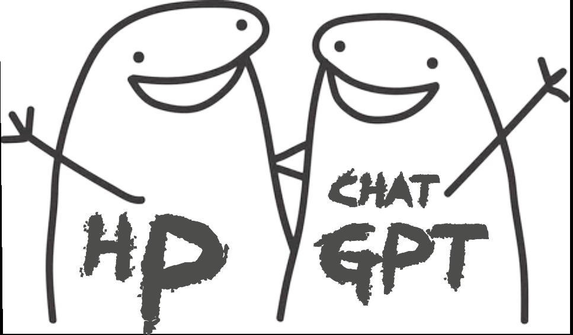
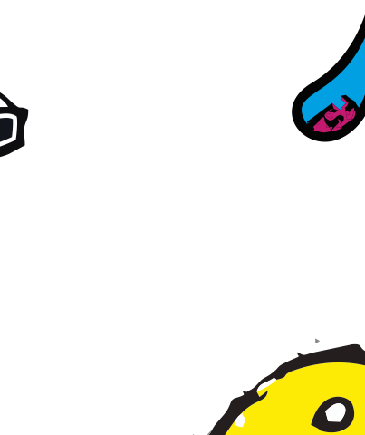
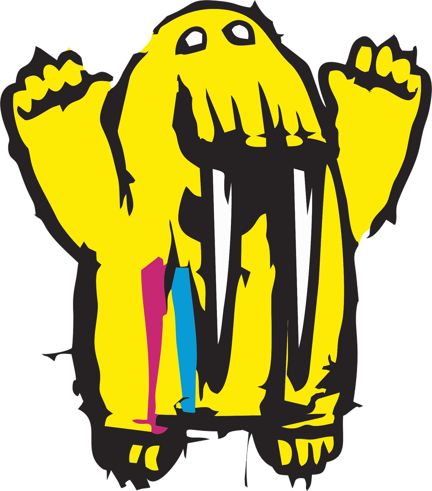

Ładowanie mądrości…
🦭 WYZWANIE MORSA
Masz ochotę na pojedynek? A może pomysł, który aż prosi się o dobry druk?
TY WYMYŚLASZ. MY DRUKUJEMY. POTEM GRAMY!
Wskakuj, wybierz maskotkę i pokaż, kto tu rządzi!
Kółko i krzyżyk, ale bez nudy. Wybierz przeciwnika i zawalcz o chwałę!


Jedna osoba zakłada grę, druga dołącza jednym kliknięciem w link.
Wybór zapamięta się na tym urządzeniu. W grze online przeciwnik zobaczy Twoją maskotkę na swojej planszy.
Wybierz dowolną z sześciu postaci powyżej. Tutaj decydujesz tylko, czy zaczynasz jako kółko, czy krzyżyk.
Stwórz pokój i wyślij link drugiemu graczowi.
Kliknij link od przeciwnika — gra otworzy jego pokój automatycznie. Kod możesz wpisać ręcznie awaryjnie.
Ładowanie rankingu…
Jedna data, jedna myśl i zero gwarancji, że będzie mądrze.
Nowy wpis pojawia się automatycznie każdego dnia. Mors nie prowadzi korekty autorskiej. Widać.
Wykonaj zadania, zgarnij pieczątki i wróć jutro po nowy zestaw.
Mors prowadzi obserwacje. Hrabia twierdzi, że raport wymaga jeszcze kilku drobnych zmian.

Osobnik wykazuje silną potrzebę poprawiania rzeczy, które przed chwilą sam zaakceptował. Szczególnie aktywny po wysłaniu pliku FINAL.
„Hrabia nie zmienia zdania. Hrabia aktualizuje rzeczywistość”. — Mors, kierownik instytutu
Dzisiejsza obserwacja: Hrabia poprosił o ostatnią poprawkę. Mors odłożył kalendarz i zamówił prowiant na trzy tygodnie.
„Jest dobrze, ale proszę zrobić bardziej tak, jak sobie wyobrażam”.
Mors jeszcze wierzy w ludzi. To się zmieni.
Wygeneruj raporty i poprawki, aby zdobywać odznaki instytutu.
Badania prowadzone bez zgody Hrabiego, który właśnie zgłosił uwagę do tego zdania.
Zakreśl pełny obrót myszą lub palcem i puść. Los podejmie decyzję. Odpowiedzialność, jak zwykle, spadnie na kogoś innego.


TO TY! WYGRAŁEŚ GARŚĆ KRÓWEK Z NADRUKIEM SZS!
10 pytań z poligrafii, grafiki i przygotowania plików. Sprawdź, czy ogarniasz temat, czy tylko ładnie klikasz.
Mors przygotował test. Podobno tylko raz pomylił CMYK z kanapką.
Trzy krótkie gry. Zero nudy. Dużo farby, lodu i drukarskich wpadek.

Łap wskazany kolor farby. Uważaj, bo drukarski bałagan nie wybacza!
Trzy litery wyglądają normalnie, jedna udaje, że jest z innej drukarni. Znajdź intruza!
Wskakuj na krę, kiedy pojawi się sygnał. Nie skacz za wcześnie, bo chlupniesz!
Klasyczna papierowa piłka nożna. Rysuj kreski między kropkami, odbijaj się od band i wpakuj piłkę do bramki!
Załóż profil, zgłoś się do rozgrywek i sprawdź, kto rządzi na papierowym boisku.
Uzupełnij pseudonim i dołącz do ligi.
| # | ZAWODNIK | MECZE | W | R | P | PKT |
|---|---|---|---|---|---|---|
| Tabela czeka na pierwszych zawodników. | ||||||
W = wygrane · R = remisy · P = porażki · 3 pkt za wygraną, 1 pkt za remis.
Sprawdzam, czy Mors już coś organizuje…
Zdobywaj je podczas gry i quizu. Każda ma swoją historię!
Zbieraj odznaki, odbieraj dyplomy i odblokuj morsową niespodziankę.
Zdobądź 3 odznaki, a odblokujesz możliwość zapytania studia o naklejki Morsa lub bonus do zamówienia.